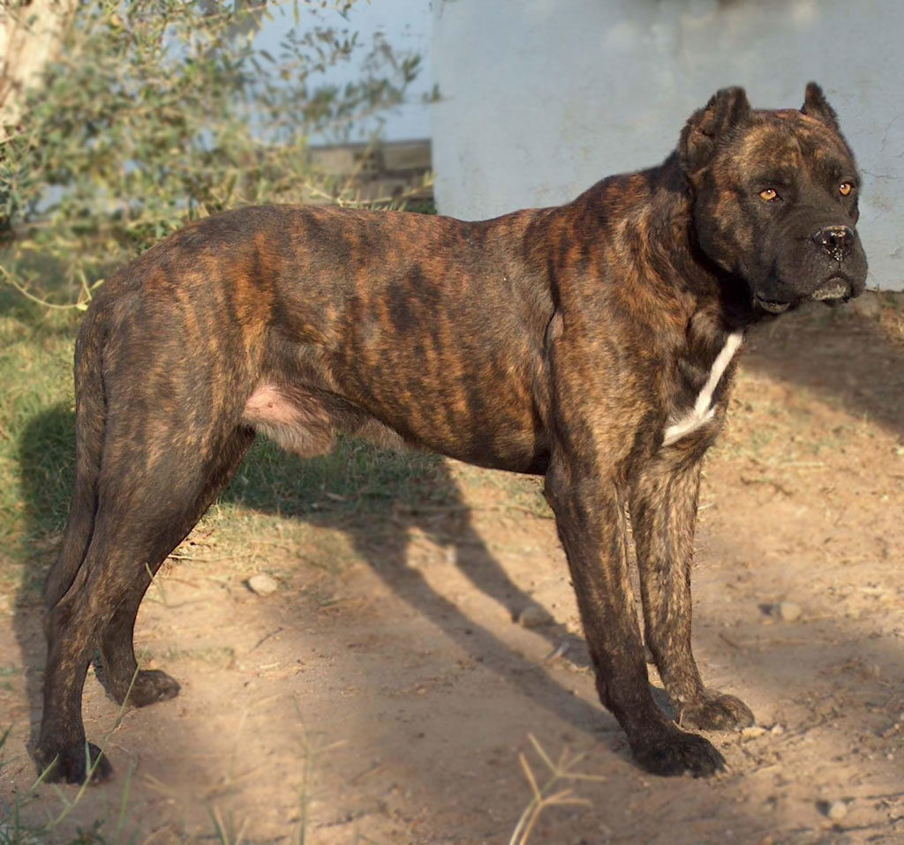
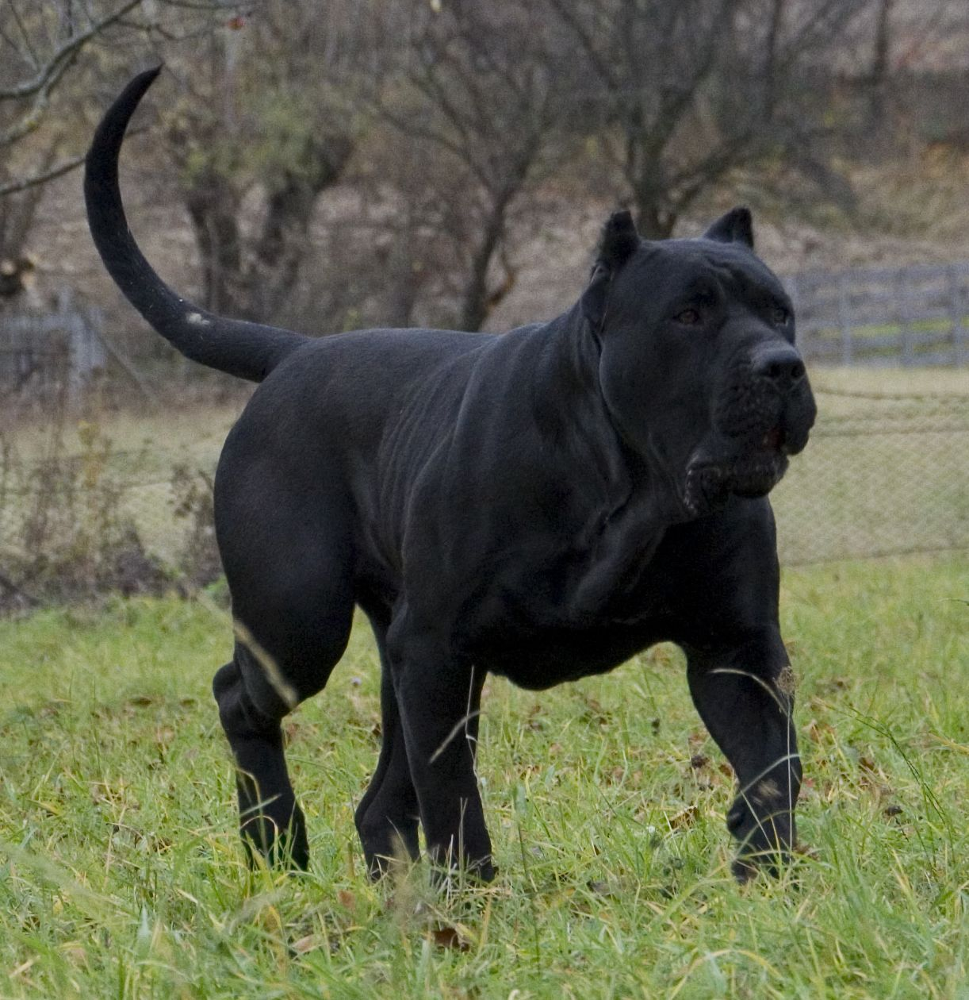
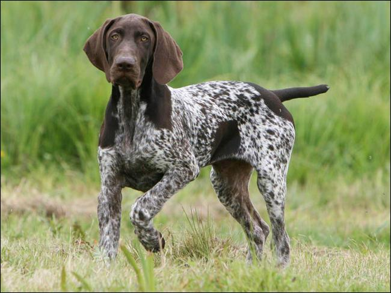

Alano Espanhol
Olhar para um Alano Espanhol pode ser uma excelente forma de imaginar como seriam as raças mais antigas porque sua aparência é primitiva, e de acordo com especialistas, ainda guarda muito do que eram seus ancestrais. As famílias do campo que utilizam este cão ainda para atividades de controlo do gado, acabam também por tratar o cão como parte da família, o que demonstra que a raça também pode ser bastante carinhosa, além de se dar bem com crianças, por mais incrível que possa aparecer.
| Expectativa de Vida | Altura | Peso | |
|---|---|---|---|
| Mínimo | 12 Anos | 53 cm | 32 kg |
| Máximo | 15 Anos | 63 cm | 46 kg |
Dogue Canário
O Dogue canário foi mencionado pela primeira nas Ilhas Canárias, na Espanha, sendo que este local é considerado seu berço da sua origem, tanto que acabou por ganhar o nome da própria localidade. Dogue Canário é um excelente cão de guarda, extremamente territorial, oferecendo proteção ao ambiente onde vive. Mas este cão costuma ser bastante agressivo e desconfiado com pessoas estranhas. As suas presas são muito fortes e eles são considerados altamente dominantes, exigindo sempre do dono uma socialização precoce com outros cães e outros animais.
| Expectativa de Vida | Altura | Peso | |
|---|---|---|---|
| Mínimo | 8 Anos | 59 cm | 40 kg |
| Máximo | 12 Anos | 66 cm | 50 kg |
Perdigueiro de Burgos
É uma raça de cães originária da província de Burgos, Espanha, foi desenvolvida através de cruzamentos seletivos. Resistente, sóbrio, fácil de treinar e dotado de um olfato excepcionalmente fino. Muito nobre, é uma raça de caráter dócil e de excelente inteligência. A sua resistência às condições climáticas e a sua habilidade para caçar aves, assim como coelhos, tornam-no muito apreciado.
| Expectativa de Vida | Altura | Peso | |
|---|---|---|---|
| Mínimo | 12 Anos | 66 cm | 25 kg |
| Máximo | 14 Anos | 76 cm | 30 kg |